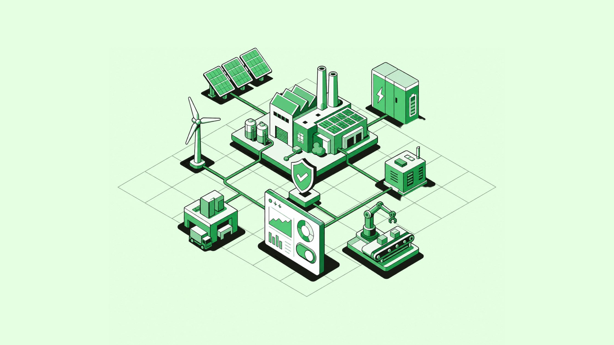
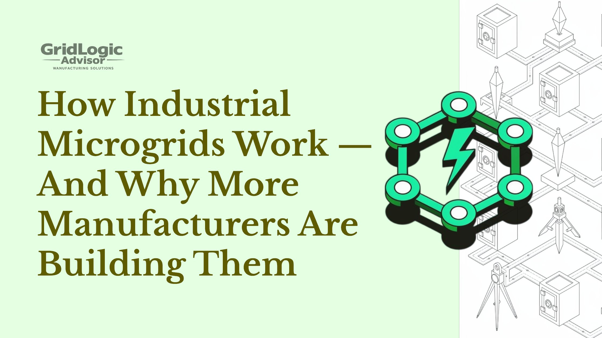
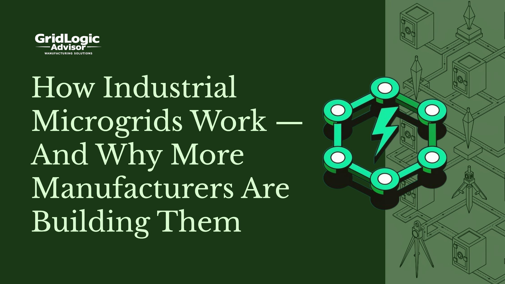
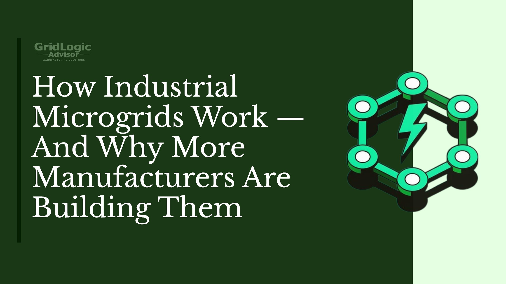

Research Notes
| Secondary Keyword | Why It Matters |
|---|---|
| battery storage / BESS | Every top result covers storage as a core component |
| peak shaving | Appears in 4 of 5 results — high intent, practical angle |
| demand charges | Paired with peak shaving; clear B2B cost concern |
| island mode | Consistent across all results — FAQ-worthy term |
| on-site generation | Positioned as the core value driver |
| energy resilience | Primary benefit language in 4 of 5 results |
| microgrid controller / control system | Technical depth signal |
| distributed energy resources (DER) | Industry-standard terminology |
| grid-connected mode | Contrast to island mode — structures explanation |
| operational continuity / uptime | Business impact language |
| payback period / ROI | Bottom-funnel decision keyword |
| solar + storage / solar arrays | Common component pairing |
| energy management system (EMS) | Appears in technical deep dives |
| demand response | Monetization angle — emerging trend |
All top results cover the same four pillars — what it is, how it works, why manufacturers use it, cost/ROI. Differentiation opportunity: plain-language clarity and AEO-optimized structure.




GridLogic Advisors · Industrial Energy Strategy
Power goes out. Production stops. Every hour offline can cost a manufacturer tens of thousands of dollars.
That is one big reason more industrial facilities are building their own power systems.
An industrial microgrid lets a factory generate and store electricity on-site. If the main grid fails, the microgrid keeps running. If energy prices spike, it pulls from stored power instead. It gives manufacturers control they never had before.
This guide explains how industrial microgrids work, why manufacturers are investing in them, and what the numbers actually look like.
An industrial microgrid is a local power system. It generates electricity near the facility that uses it.
It can connect to the public utility grid — or run completely on its own. That flexibility is what makes it valuable.
Wikipedia defines a microgrid as a group of interconnected loads and distributed energy resources that can operate as a single controllable entity. In simple terms: it is a small grid you own and manage yourself.
Every industrial microgrid has three parts working together.
This is where the electricity comes from. Most industrial microgrids use a mix — solar panels, natural gas generators, diesel backup, or wind turbines. Combining sources keeps the system reliable even when one source is unavailable.
Batteries store excess electricity when supply is high or demand is low. When demand spikes or the grid goes down, the batteries release that power. Battery storage is often 30–45% of the total system cost — but it is the part that unlocks most of the savings. Learn more: Solar + Battery Storage — What Size System Does Your Plant Actually Need?
The microgrid controller is the brain. It monitors real-time energy supply and demand and decides where power flows. It can switch between grid-connected mode and island mode automatically — often in milliseconds. According to the U.S. Department of Energy, advanced controllers can optimize across multiple generation sources and storage assets simultaneously.
Most of the time, an industrial microgrid works with the public utility grid. In grid-connected mode, on-site generation reduces how much electricity the facility buys from the utility. The facility can also sell excess power back to the grid in some regions.
When the main grid goes down — or when it makes financial sense to go independent — the microgrid switches to island mode. It disconnects from the utility and runs entirely on its own generation and storage. This transition can happen automatically in under a second. See: What Is Island Mode? A Plain-Language Guide
There are five reasons this trend is accelerating.
A single hour of unplanned downtime can cost a facility thousands to hundreds of thousands of dollars, depending on the industry. Industrial microgrids reduce that risk by keeping critical systems online even when the public grid fails.
Utilities do not just charge for total electricity used. They also charge based on the highest amount of power consumed in any 15- or 30-minute window during a billing cycle. These are called demand charges, and they can account for up to 50% of a manufacturer's electric bill.
An industrial microgrid cuts those spikes by drawing from battery storage during high-demand periods. This is called peak shaving — and it is one of the fastest ways a microgrid pays for itself. Read more: How to Read Your Utility Demand Charge and Why It Matters
A peer-reviewed review in the journal Energies found that peak shaving via battery-based microgrids delivers clear economic, technical, and environmental benefits for industrial facilities.
On-site generation lowers the baseline cost of electricity. Solar panels produce free power during daylight hours — offsetting grid purchases when rates are highest. Facilities with high renewable penetration can cut power costs by up to 80% compared to traditional utility supply, according to the National Renewable Energy Laboratory (NREL).
Industrial microgrids make it possible to integrate renewable energy directly into daily operations. Some facilities also convert emissions reductions into carbon credits. Learn how industrial facilities are using microgrids to hit net-zero targets
A microgrid that stores more electricity than it needs can sell the excess back to the grid. Many utilities also pay facilities to reduce consumption during high-demand periods — a program called demand response. These revenue streams help accelerate the payback period.
GridLogic Advisors helps manufacturers evaluate energy risk, model payback scenarios, and identify incentives in their region — before committing to a project.
No sales pitch. Just the numbers.The U.S. Department of Energy and NREL set a baseline capital cost of $2 million to $5 million per megawatt for microgrid development in the continental United States. That covers equipment, installation, and soft costs.
Incentives significantly reduce out-of-pocket costs:
Combined, these incentives often cover 40–60% of total project costs, according to Illinois Commercial Energy.
For most manufacturers, yes — especially those with high downtime risk or large energy bills.
| Scenario | Typical Payback Period |
|---|---|
| High electricity costs + frequent outages | 3–5 years |
| Average grid-connected industrial system | 5–8 years |
| Remote facility replacing diesel generation | As little as 3.5 years |
The savings compound over time. As utility rates rise, the value of on-site generation increases. A system that pays back in 7 years may generate two or three times its cost over a 20-year lifespan.
Siemens installed a 1.25-megawatt solar array and a 3.9 MWh battery system at its manufacturing facility in Wendell, North Carolina — in partnership with Duke Energy. The system enables net energy metering, reduces annual grid energy consumption by 2.5 MWh, and supports carbon-neutral manufacturing goals across the facility.
Manufacturers across sectors — automotive, food processing, chemicals, electronics — are making similar investments.
An industrial microgrid generates electricity on-site using sources like solar panels, gas generators, or batteries. A control system monitors supply and demand in real time and decides where power flows. The system can operate connected to the public grid or switch to island mode and run independently during an outage.
Island mode is when a microgrid disconnects from the main utility grid and runs on its own generation and storage. It can switch automatically during a power outage, often in under a second. Facilities can also island intentionally during peak pricing hours to avoid high demand charges.
Peak shaving is when a facility draws from battery storage during high-demand periods instead of pulling power from the grid. This reduces the spikes in consumption that trigger demand charges — which can make up half of an industrial facility's electric bill.
Capital costs typically range from $2 million to $5 million per megawatt. Federal tax credits, state grants, and financing programs can cover 40–60% of that cost. Payback periods range from 3 to 8 years depending on facility size, electricity costs, and outage risk.
A well-designed industrial microgrid reduces utility bills, avoids downtime costs, and can generate revenue from demand response programs. Facilities in high-electricity-cost regions can see payback in 3–5 years. Over a 20-year lifespan, savings often exceed the original investment by two to three times.
We model energy costs, downtime risk, and incentive eligibility for manufacturers across the U.S.
Includes payback projection, available incentives, and a recommended system scope.An industrial microgrid is no longer a niche investment for large utilities and remote sites. It is a practical tool for manufacturers who want to control their energy costs, protect against outages, and meet sustainability commitments.
The technology is mature. The incentives are real. And for many facilities, the payback math works.
The question is not whether a microgrid makes sense in theory. It is whether one makes sense for your facility — with your specific energy profile, downtime risk, and cost structure. That is where the analysis starts.